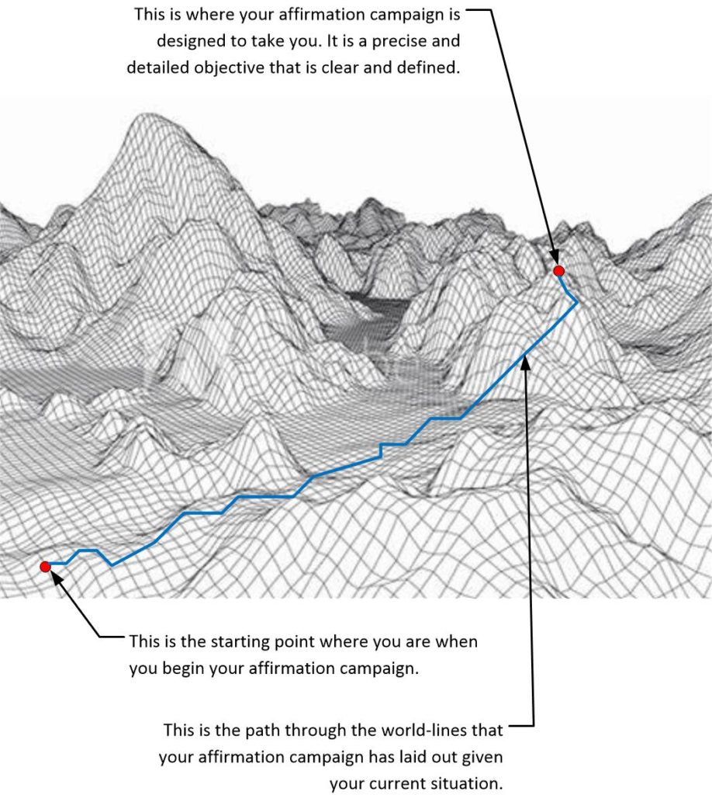
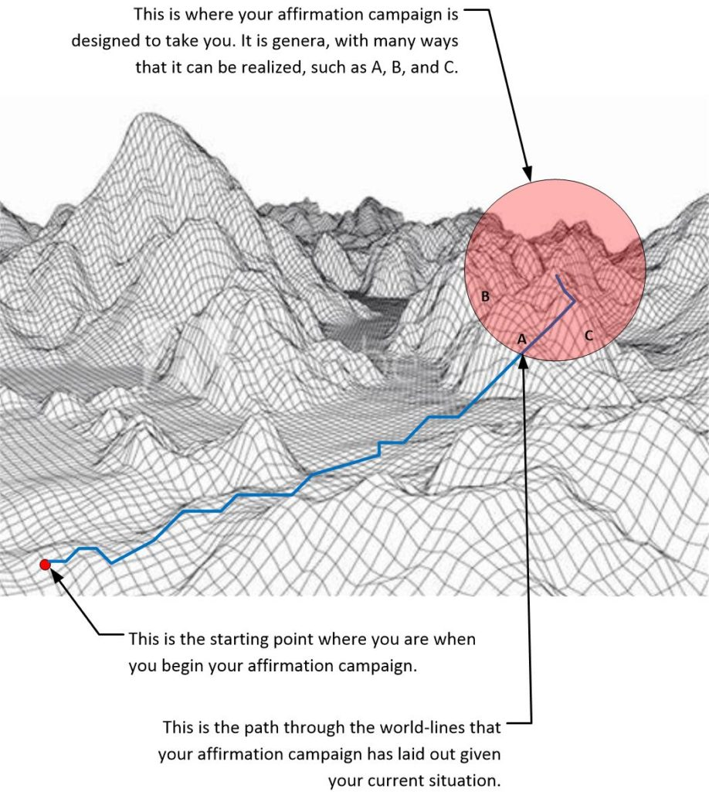
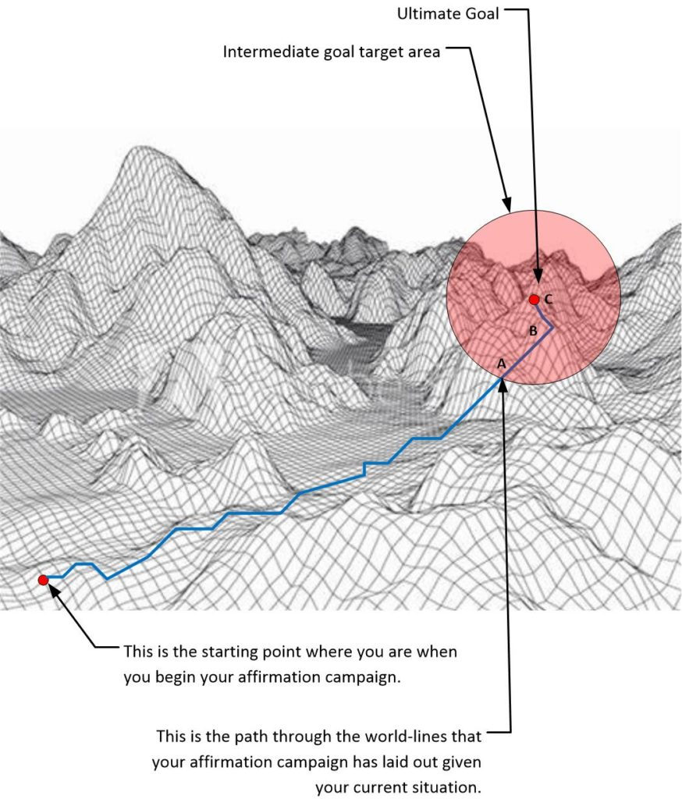
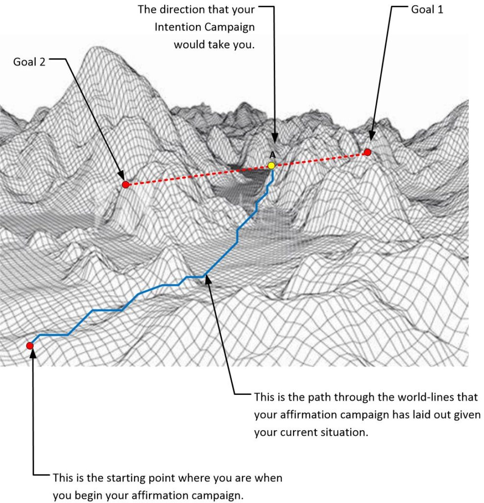
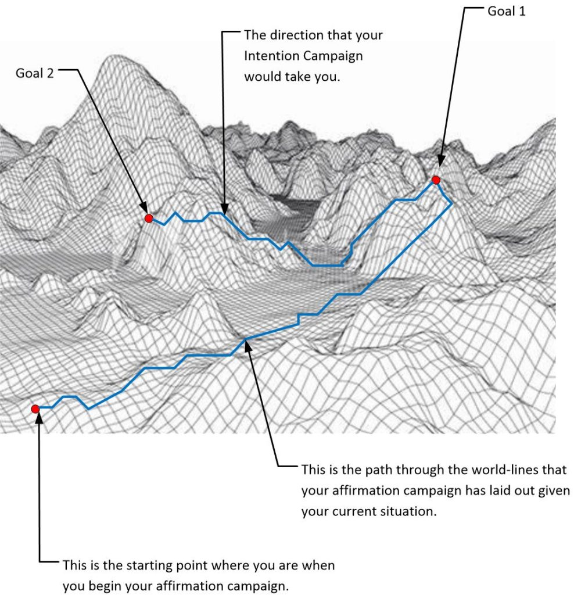
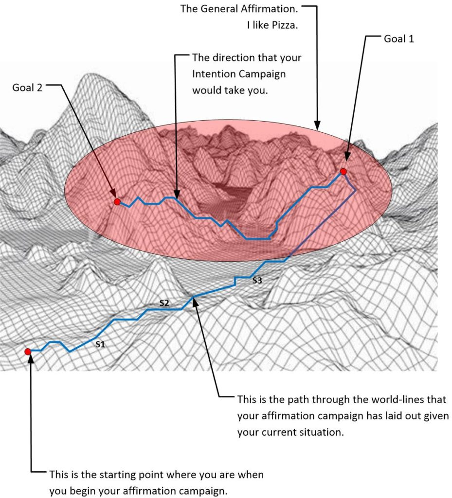
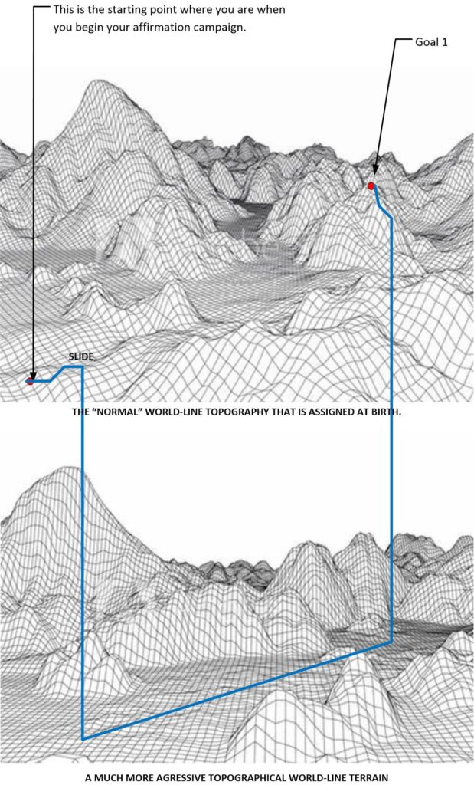
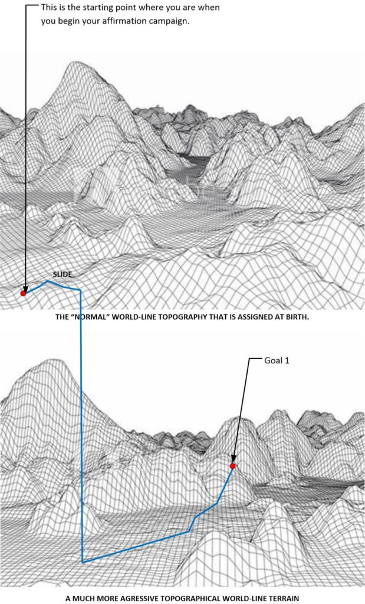

An “intention campaign” is a method of prayer that allows a person to alter their reality so that they can achieve and manifest their desires.
This technique has many different elements and is is all well-founded within quantum physics, though most physicists have no idea that the reality can be displayed in the way that I describe. Even those that follow the Everett Postulate of the MWI still try to reconcile their theory with their physical observation. That’s a hybrid of Newtonian Physics and Quantum physics. It does not work that way.
Thoughts cause immediate changes to our physical world.
Immediate.
And so…
If you can control your thoughts, you can control your life.
In this post, we will discuss techniques that will allow you to add complexity to your Intention Campaign without having to endure a long period of time waiting for your goals to manifest. This are advanced techniques and should NOT be used by anyone who is a “newbe” to this type of prayer and objective attainment process.
Quick Review
The theory is quite simple really.
Every fraction of a moment is a world-line. Our consciousness hops in and out of world-lines at a rate of 4 Hz. (plus or minus depending on the person), and the world-line that we enter is a function of our thoughts. Well, actually, added on to the previous train of thoughts. We can navigate through this reality by controlling our thoughts. And if we concentrate and direct our thoughts, we can make our wildest dreams come true.
This concentration of thought is known as an “Intention Campaign”, or a “Prayer Campaign”.
The farther away your dreams are, the more world-lines that you will need to pass through to get to it. So at a speed of 4Hz, it might take a while. A “while” might take a long stretch of time. Think in terms of many months or years.
The longest time period for me, so far, in all my Affirmation Campaigns is a little over three years. The shortest time period has been a matter of weeks. It all depends on many factors.
But simpler Intention Campaigns will be relatively quick. So if you want to have things manifest in your life relatively quickly (say within the year), you simply keep the affirmations “general”, “simple”, and “uncluttered” with details.
And this is what I advise everyone to do.
It’s the difference between;
- I have a pizza.
Or…
- I have a mushroom, bacon, hamburger pizza, with extra cheese, Chicago style, with anchovies, and pineapple chunks. I have it served inside of a genuine Chicago deep-pan-pizza restaurant served to me with a bottle of imported French wine and with a trio of singers singing opera at my table.
The far simpler Intention will manifest sooner than that of the more detailed intention.
It’s like this…

In the map above you can plainly see that it will take numerous world-lines to obtain your goal. And it will be obtained. It’s just that you have a very precise and detailed goal in mind and you do not want any mistakes, of if there are mistakes, to keep them as minimized as possible.
In general, the more precise and accurate your overall objective is, the smaller the point )in red color above) would be. And yes, the longer it would take to reach that point.
So…
Here’s some techniques that you can use to change the time (it takes) to obtain these goals and objectives…
This first technique is the one that I recommend for all newbes, and for everyone that doesn’t want to get “hot and heavy” with the “ins and outs” of Intention Generation.
[1] Be intentionally vague about your objective.
Here, instead of being precise, you permit the vagueness of your intention campaign to reduce the amount of time required to attain your goal.
Thus, you can obtain your goal in a far shorter time. In the example above, instead of wanting all the specifics related to pizza, all you want is a very simple statement.
- I have a pizza.
And the map would look something like this…

[2] Place specific affirmations in regards to the manifestation of events along the route.
Here is a different technique.
Here, we add (additional) specific intention phrases. We do this to control the selection of the map route involved. In short, we state that we do actually want the ultimate goal objective, but that we specifically want simpler and smaller sub-goals to manifest earlier.
I have A, but B, C and D will occur first.
In this case, let’s suppose that we still want that super-dooper deluxe pizza scenario…
- I have a mushroom, bacon, hamburger pizza, with extra cheese, Chicago style, with anchovies, and pineapple chunks. I have it served inside of a genuine Chicago deep-pan-pizza restaurant served to me with a bottle of imported French wine and with a trio of singers singing opera at my table.
However, we don’t want to wait a few years to have it manifest. And we do know that it might take years. So we add a few lines stating that our ultimate goal is, but that we are willing to have interim minor goals happen before the ultimate goal.
- I have an ultimate goal where I have a mushroom, bacon, hamburger pizza, with extra cheese, Chicago style, with anchovies, and pineapple chunks. I have it served inside of a genuine Chicago deep-pan-pizza restaurant served to me with a bottle of imported French wine and with a trio of singers singing opera at my table.
- However, before that event happens, I will have pizza every week.
And as a result, your Intention Campaign map might look something a little like this one…

Notice that in this method, objectives A, and B will occur before your ultimate objective C.
Thus the time to reach A is far less than to reach C.
[3] Define the target goal to be open-ended or of binary complexity.
Of course, most people will have multiple desires in an intention campaign. And this greatly adds complexity to the effort.
Here, instead of one particular goal in mind, you have multiple goals.
With the intention of obtaining one of the goals first, and then altering the subsequent intention campaign prayers as needed to achieve the realization of the final goal.
Here you specify the timing of your objectives.
In other words, you can have multiple goals in the same intention campaign. They do not need to be complimentary. Which (might cause some confusion in your life; read “potential turmoil”), but could very well result in a situation that you would like manifesting sooner than what might otherwise occur.
As in this example…
- I have a mushroom, bacon, hamburger pizza, with extra cheese, Chicago style, with anchovies, and pineapple chunks. I have it served inside of a genuine Chicago deep-pan-pizza restaurant served to me with a bottle of imported French wine and with a trio of singers singing opera at my table.
- I have a chicken, tomato, and tuna pizza with extra sauce and no cheese. It is New York style and served with a pitcher of beer.
It would look something like this… which could be good or bad depending on your point of view.

The most important thing is to realize that neither goal 1 or goal 2 would be realized. Instead something else might manifest, Maybe you’d get this instead of either goal 1 or goal 2…
- I have a chicken, mushroom, hamburger pizza that is Detroit style and served with warm coke-cola.
Your eventual realized objective would be something in between your other goals. Which means that neither goal would manifest. So, you need to add further affirmations to help navigate this reality.
Binary complexity makes the target goal very “fuzzy”. It becomes imprecise and that might or might not be what you desire. To compensate for this “fuzziness” you need to add some logic. Or in the word of electrical engineers, “fuzzy logic”…
- Goal 1; I have a mushroom, bacon, hamburger pizza, with extra cheese, Chicago style, with anchovies, and pineapple chunks. I have it served inside of a genuine Chicago deep-pan-pizza restaurant served to me with a bottle of imported French wine and with a trio of singers singing opera at my table.
- Goal 2; I have a chicken, tomato, and tuna pizza with extra sauce and no cheese. It is New York style and served with a pitcher of beer.
- Goal 1 will occur before goal 2.
And this logic will look like this…

And while this solution will most certainly straighten out the confusion in regards to your affirmation campaign, it will have other unintended consequences.
You see, one detailed goal will mess up with a second one, then what about long lists of fifty or one hundred affirmations? What then? Well, your realized intentions will be all over the place. And thus…
It might appear that nothing is actually getting accomplished. You will just be all over the place and while certain goals will be obtained, others will not, or at best be confused. You will not really be sure if your intention is working or not.
As you might just be hopping from one goal to the other. So the best way to handle this is to put qualifiers and associations with your goals…
You will need to have some kind of reassurance that you are “on track”. This is some way, some feedback, that will tell you that things are proceeding properly. You know, like signs along the road.
- Goal 1; I have a mushroom, bacon, hamburger pizza, with extra cheese, Chicago style, with anchovies, and pineapple chunks. I have it served inside of a genuine Chicago deep-pan-pizza restaurant served to me with a bottle of imported French wine and with a trio of singers singing opera at my table.
- Goal 2; I have a chicken, tomato, and tuna pizza with extra sauce and no cheese. It is New York style and served with a pitcher of beer.
- Goal 1 will occur before goal 2.
- Before the realization of either goal 1 or goal 2 I will have pizza every week.
- I will have “signposts” that will confirm to me that my affirmations are in process and that things are going to schedule.
- Signposts 1 through 3 will occur before both goal 1 and goal 2.
- Signpost 1 is that I will discover a delicious pizza restaurant within five minutes drive to my house.
- Signpost 2 is that I will meet an attractive owner of a pizza parlor.
- Signpost 3 is that I will try a new type of pizza that I have never tried before.
It might look something like this…

What all this does is establish that you can obtain binary goals of different objectives with a generalized over-riding goal that you can obtain far earlier than either of the first two goals individually. Further, you can map the path out to act as a double check to see if you are on the “proper path”.
Yet, the problem still exists.
How to [1] reduce the amount of time to implement a set of (potentially) conflicting goals, while [2] decreasing the time to manifest the intention, and at the same time [3] knowing that you are “on track” per your affirmation campaign.
Because if you look at the map directly above, you will see that while the goals can indeed be realized, it is questionable that they are actually going to be realized in a shorter amount of time. You will still need to travel through “X” number of world-lines to reach goal 1 and then another “Y” number of world-lines to reach goal 2.
The key then, is NOT being overly specific with the world line mapping, but rather layout the targets and put in specific affirmation commands that allow versatility to accomplish your goals in a timely manner.
- Do not specify the objective timing; goal 1 before goal 2.
- You specify timing as an objective in itself; Goal 1 in one year.
[4] Make timing one of the affirmation objectives.
In this case, you will make the timing of when you have the objective realized part of the affirmation.
This is tricky, as almost all affirmation campaigns get complex really, really fast when you start defining timing. For what you are doing is saying…
Instead of passing through 50,000 world-lines to meet goal 1, We would pass through 200 world-lines.
Which means, boys and girls, that you might well end up going through world-lines that you might not want to experience. These are world-lines that might not be comfortable for you or your family to experience.
And that could easily become dangerous.
So, using the above examples, here is what the affirmation campaign would look like..
- I have a mushroom, bacon, hamburger pizza, with extra cheese, Chicago style, with anchovies, and pineapple chunks. I have it served inside of a genuine Chicago deep-pan-pizza restaurant served to me with a bottle of imported French wine and with a trio of singers singing opera at my table.
- I accomplish this goal within fifteen months.
Now, of course, in order to utilize this technique, you would actually alter the topographic map that you would need to traverse. You would force some slides to make it happen.
This is NOT for the squeamish.

Slides and topographical world-line mapping
Now, in order to explain this, I need to get involved in what a “slide” is.
In short, a “slide” is a forced switch to another world-line that resides upon a completely different world-line topography map than what you have been assigned to (or selected) at birth. When I was in MAJestic, this was a big part of my life. I was sliding all over the place, and some of the world-lines were really, really strange.
Forcing a slide is not all that difficult to do.
You just define the number of world-lines that you need to traverse to obtain a goal. You can say either [1] I will pass through XXXXXX world-lines to achieve my goal, or [2] I will achieve my goal in YYY days, months and years. Your consciousness will head just like an arrow to the new command.
And that might be a “bumpy ride” for you to experience. Or, maybe, yes, probably WILL be. Most certainly, it will be something different than what your consciousness “signed up for” when it took on your body. That’s for certain.
Now this entire procedure and process opens up an entire “can of worms”.
- What is a slide and how does it differ from a normal world-line movement?
- What is an assigned topography world-line map?
- How you can slide in between different topography maps, and how you can tell that you are doing it?
- Can affirmation campaigns be speeded up or slowed down using slides and topography maps?
- Can a person “cheat death” by altering their assigned topography map?
Yes, I know that it is confusing.
What? Did you think that the use of intention affirmation campaigns was all “that simple”? It is, but it involves and understanding to the reality universe that is beyond most people. Sorry, but that is the way it is.
So, here’s the “executive summary”…
- When consciousness selects a body to be birthed in, it also selects the world-line topographical map.
- This topographical map is the boundaries of the “highs” and “lows” of a given lifetime for a given person.
- It limits a path that the consciousness can travel upon to obtain experiences. There is a degree of freedom that one has, but the situation and environment limits movement. (A hamburger is available to purchase, but your wallet only has a few pennies in it.)
- It is, preordained, by the soul in conjunction with other entities in the Heavenly realms. Fate.
- It sets forth the highest probability of life-experiences that a given consciousness will experience. Fate.
- In general, most people do not control their thoughts. The environment that surrounds the body controls the thoughts. Thus, a soul can pretty much predict the kind of life that a person would experience on this earth in this particular body.
- However, if you can control your thoughts, you can navigate the world-line topography. Free-will. (Free will occur when you control your thoughts. Failure to do so results in a roller-coaster ride of fate.)
- By specifying topography criteria, you can slide into other world-line topographical maps. This greatly expands the ability of what you will experience and how your consciousness would learn through this lifetime.
- Like an infinite number of world-lines, there is a near infinite number of topographical maps that one can jump to.
If you all want, I can get involved in this subject in more detail. As it is tied to my role in anchoring the world-line clustering. But, let’s not get too sidetracked right now. Ok?
Simple and safe slides
I think that the best of all worlds, for an advanced user is to carefully and gingerly utilize slides with very broad and wide-scoped affirmation goals.
What this means is that you would define the topographical map profile, then allow yourself to slide onto this strange new world-line map, and obtain your goals and objectives that way.
In order to do this, then you would need to be very, very, very careful on how to specify the intention campaign, as well as trying to keep your goals defined and simple. You can handle it this way…
[5] Use slides to change the topographical profile map of world-lines
The key in this technique is a very careful application of commands that will control the implementation of slides.
You must add navigation commands to your affirmations.
As in this example..
- I have a mushroom, bacon, hamburger pizza, with extra cheese, Chicago style, with anchovies, and pineapple chunks. I have it served inside of a genuine Chicago deep-pan-pizza restaurant served to me with a bottle of imported French wine and with a trio of singers singing opera at my table.
- I use world-line slides to accelerate the implementation of these affirmations.
- The slides only come into use whenever they can [1] reduce the time to obtain the affirmation realization within my physical reality, and [2] they do not cause me any discomfort or trouble.
And it will look something like this…

Now doing this will come with unintended consequences.
The most notable and the most significant is that you will no longer be restricted to the birth-assigned world-line topography map. You will actually assigning your consciousness “free will” to fully navigate the MWI free of the fated restrictions of your birth world-line topography.
This is good and bad.
As the purpose of our consciousness in a given world-line (starting point), in regards to a topographic map, is to obtain experiences, if your intention campaign is too “relaxed” and “too comfortable”, you will be lax in gaining experiences. So this is not something that your soul desires. You thus, you can well expect to have unique experiences from which your soul can grow from…
Experiences generate thoughts. Thoughts create quanta associations, and help build the soul.
So, it could result in some really funky world-lines. Like (for instance) world-lines that has Gene Simmons still dancing to the beat, or where socks with toes are commonplace, or where (Heaven forbid) pineapple on pizza is mandated by law. You never can know…
Engaging in any affirmation campaign that utilizes slides WILL see an acceleration in changes outside of your life. Suddenly there might be fashions that seem odd to you, or that ways and styles of food will be different, or that habits or group behaviors will be uncomfortable for you. That is what happens in slides and it is normal.
Which brings me to the…
Disco Weener Beaner Haven
There was a cult movie back in the 1990’s. I can’t seem to be able to find it. But it revolves around this bank heist where the robbers escape to Mexico to hide out in a Mexican town.
This community is rather strange with all sorts of unique and unusual people in it. Indeed, both Grace Jones and Dennis Hopper make cameo appearances in it.
This is a movie where they love their coffee. And throughout the movie elements of a 1960’s coffee commercial is played to emphasize the strangeness of it all.
In the movie is a character that sells hot dogs in a cart. The name of his “establishment” is the Disco Weaner Beaner haven, and he has a little jingle that he sings to this end. Oh, and he’s a minor character. I think he gets shot and dies.
It doesn’t matter.
In the movie, a trio of bank robbers escape to this town, and suddenly find themselves surrounded by a host of really strange people. yet, at the same time everything is “normal” but decidedly twisted. And the point of this is exactly this…
- Their life remains normal.
- The lives of those around them are really strange.
When you accept that your consciousness is willing to perform slides to alter the world-line reality, you agree to “go off the rails” and use free-will to navigate the world-line topography outside of the topography that you were born into. This is a BIG STEP, and not to be taken lightly.
You will still be able to control your existence, and your life, but the surrounding world might start to look rather strange, and over a period of time, as the slides become more and more pronounced, you might be surprised in what is the “accepted norm” for the society that surrounds you.
Personally, I see this as a very great and effective way to really expand your quantum envelope for soul growth.
But, if you are not careful, you might find yourself in all sorts of situations that you might find uncomfortable.
Conclusion
Here we discuss some advanced techniques to shorten the time to implement some of your verbal affirmations within a prayer campaign. The most effective method, is also the most dangerous. Here you accept to use slides to move off your at-birth assigned world-line topography map. As such you close off the fated life that you had assigned yourself, and accept a free-for-all free-will life with all the dangers that it might entail.
Happy intentions everyone!